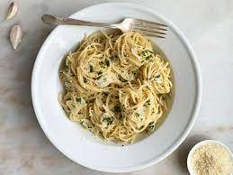

Pasta

Description
This recipe is about a type of oil pasta with the main ingredient of garlic. Usually made
with spagetti.
Ingredients
- olive oil
- 4 cloves of garlic
- spagetti
- parsley
- peperoncinno
- salt
Steps
- Boil enough water in a pot
- Add the pasta and a bit of salt to the boiling water
- While the pasta is boiling, slice the garlic
- 6 minutes after adding the pasta, add olive oil, garlic, and peperoncinno to a pan
- Cook them in low fire until the garlic turns gold
- When 10 minutes has passed, add the pasta and one scoop of water to the pan
- Cook until the water evaporates